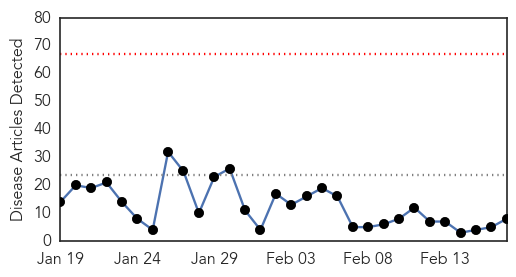
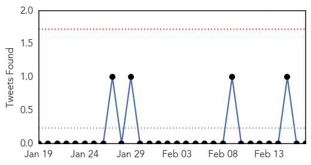
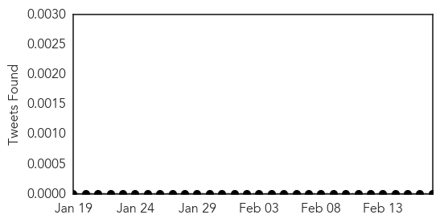
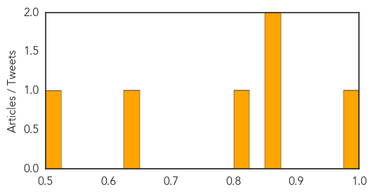

Influenza
30-Day Web Trend
0 alerts, 0 warnings

30-Day Twitter Trend
0 alerts, 0 warnings

Article Locations

Article Confidences

Top Articles:
- 0.975
- CDC Hypes Flu Dangers
- 0.961
- As deadly flu bug ebbs, milder strain spreads
- 0.960
- Flu shot protects against new H7N9 strain: study – BorneoPost Online
- 0.955
- Flu shot protects against new strain H7N9
- 0.955
- Flu shot protects against new H7N9 strain: study
- 0.928
- WHO increases humanitarian efforts as crisis in Ukraine continues - Ukraine
- 0.580
- Tamiflu Improves Flu Symptoms, Decreases Respiratory Infection Risk
- 0.515
- Ban on import of live poultry from Italy still in effect - Emirates 24
Top Tweets:
- 0.612
- Adoption of Preventive Behaviors in Response to the 2009 H1N1 Influenza Pandemic: A Multiethnic Perspective http://t.co/vAywfxwVvX
Meningitis
30-Day Web Trend
1 alerts, 0 warnings

30-Day Twitter Trend
0 alerts, 0 warnings

Article Locations

Article Confidences
Top Articles:
Top Tweets:
-
No tweets found for Feb 17, 2015